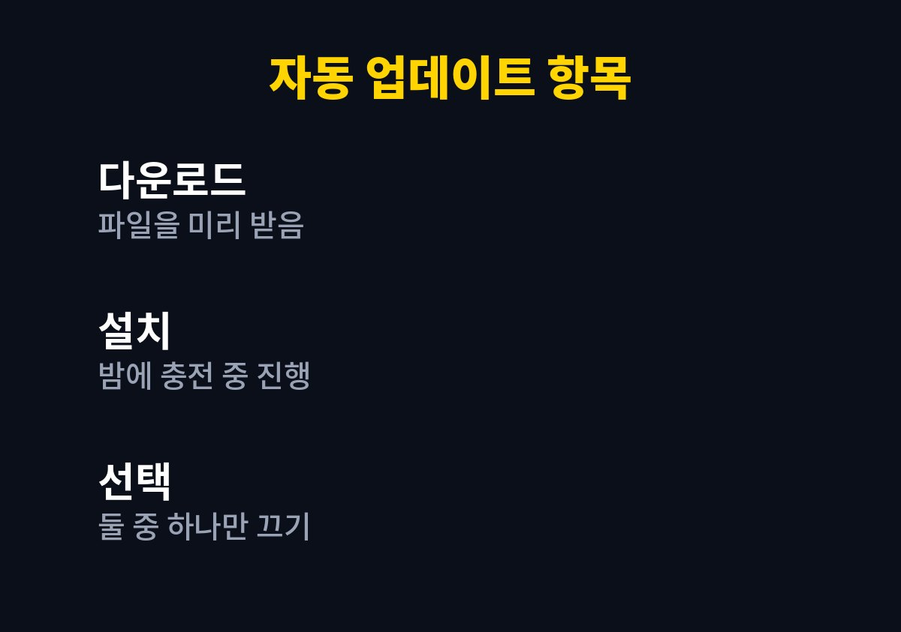
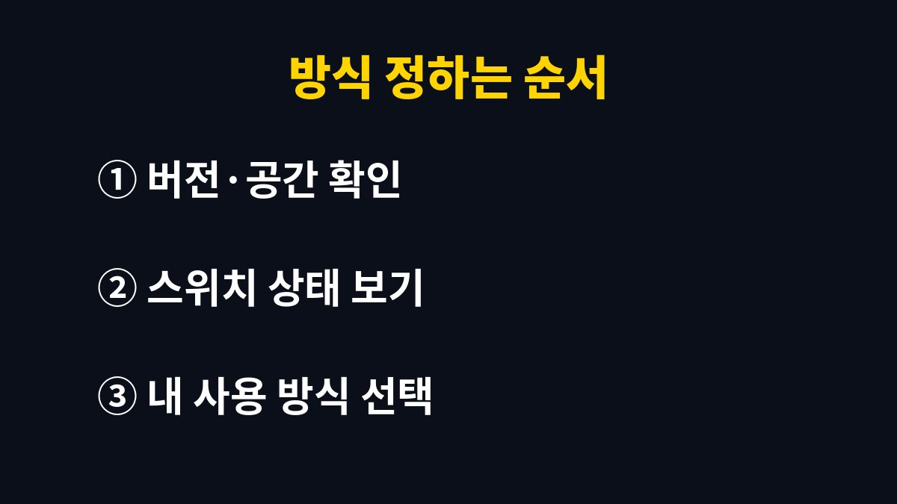

아이폰 자동 업데이트는 켜 두어도 되지만, 업데이트 시점을 직접 고르고 싶다면 설치만 끄는 방식이 맞다.
다운로드와 설치가 따로 나뉘어 있어서 한 가지만 끌 수도 있다.
자동 업데이트를 켜 두면 새 iOS가 나왔을 때 폰이 알아서 내려받고 설치한다.
설치는 보통 밤에 충전기에 꽂혀 있고 와이파이에 연결된 상태에서 이루어진다.
직접 설치 방식은 알림이 떠도 내가 고른 날에 설정 앱에서 눌러 진행한다.
어느 쪽이 낫다고 잘라 말할 수는 없다.
폰 사용 습관과 업데이트 직후의 불편을 얼마나 견딜 수 있는지에 따라 갈린다.
예를 들어 중요한 발표나 시험 전날 밤에 자동 설치가 돌아가면, 아침에 화면 배치가 달라진 폰을 만나게 된다.
반대로 몇 달씩 업데이트를 미룬 폰은 이미 알려진 보안 구멍이 막히지 않은 채로 남는다.
두 경우 모두 손해가 있다는 점을 알고 고르면 된다.
| 비교 항목 | 자동 업데이트 | 직접 설치 |
|---|---|---|
| 설치 시점 | 폰이 밤에 진행 | 내가 고른 시간 |
| 보안 패치 | 빠르게 적용 | 미루면 늦어짐 |
| 갑작스러운 변화 | 아침에 바뀐 화면을 만날 수 있음 | 미리 후기를 보고 결정 |
| 신경 쓸 일 | 거의 없음 | 알림 확인이 필요 |

설정 > 일반 > 소프트웨어 업데이트 > 자동 업데이트 화면에 들어가면 항목이 나뉘어 있다.
iOS 업데이트 다운로드와 iOS 업데이트 설치가 따로 있어서 하나만 끄는 것이 가능하다.
iOS 버전에 따라 보안 관련 항목이 추가로 보이는 폰도 있다.
다운로드를 켜고 설치를 끄면 파일은 미리 받아 두고 설치 시점만 내가 정한다.
저장 공간이 빠듯한 폰이라면 이 방식이 오히려 불편해질 수 있다.
내려받은 파일이 공간을 차지해서 사진 앱이나 앱 설치가 막히는 일이 생기기 때문이다.
자동 설치는 폰이 잠겨 있고 충전 중일 때만 진행된다.
암호가 걸려 있어도 밤사이에 설치가 끝나므로, 아침에 암호를 한 번 더 요구받는 것은 정상이다.
이때 당황해서 폰을 초기화하는 일은 없어야 한다.
업데이트 알림 배지가 설정 앱 아이콘에 붉게 남아 있는 것이 신경 쓰이는 사람도 많다.
자동 설치를 켜 두면 그 배지가 금방 사라지지만, 직접 설치를 고르면 설치할 때까지 남는다.
배지가 거슬린다는 이유만으로 설치를 서두를 필요는 없다.
선택은 한 번 정하고 끝나는 것이 아니다.
폰을 오래 쓰다 보면 저장 공간이 줄고 쓰는 앱도 바뀌므로 반년에 한 번쯤 이 화면을 열어 다시 본다.

표처럼 두 방식은 장단이 반대로 움직인다.
내 경우에는 새 버전이 나오고 일주일쯤 지나 이상 후기가 없을 때 직접 설치하는 편이었다.
다만 보안 패치만 담긴 작은 업데이트는 미루지 않고 바로 설치하는 쪽이 안전하다.
업데이트 직후 하루이틀은 배터리가 평소보다 빨리 닳는 경우가 많다.
백그라운드에서 사진 분석이나 색인 작업이 돌기 때문으로 알려져 있다.
나는 이럴 때 바로 설정을 뒤집지 않고 이틀 정도 지켜본다.
그래도 발열이나 끊김이 이어지면 Apple 지원에 문의하는 쪽이 낫다.
자동 설치를 켜 두었는데 어느 날 업데이트가 안 된다면 대개 밤새 충전기가 빠졌거나 와이파이가 끊겼거나 저장 공간이 모자란 경우다.
이 세 가지를 순서대로 보면 원인이 잡히는 일이 많다.
업데이트 후 특정 앱이 열리자마자 꺼진다면 앱 스토어에서 해당 앱의 업데이트가 있는지 먼저 본다.
앱 개발사가 새 iOS에 맞춰 수정본을 내는 데 며칠 걸리는 경우가 있다.
이 경우 iOS 쪽 문제로 단정하지 않는 것이 시간을 아낀다.
오늘 설정 화면에서 다운로드와 설치 스위치가 각각 어떤 상태인지 한 번 열어 보면 된다.
남은 저장 공간이 부족해 보이면 업데이트 방식을 고르기 전에 공간부터 확보한다.
※ 2026년 기준 공식 안내를 바탕으로 정리한 글이며, 기기·앱 버전에 따라 메뉴 이름이 다를 수 있다.